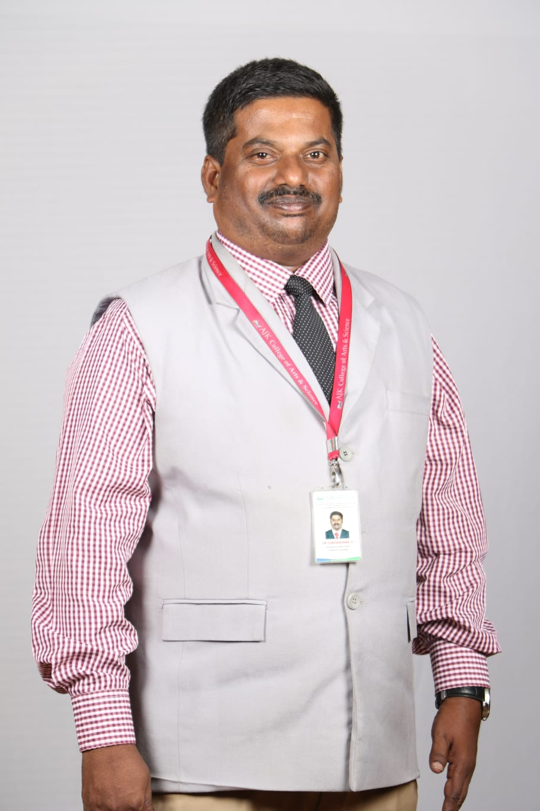

Dr. B. Suresh Kumar is an academician with over 19 years of teaching experience in Computer Science and Information Technology. He has served as Assistant Professor, Associate Professor, and Head of Department across multiple institutions in Tamil Nadu. His teaching approach emphasizes conceptual clarity, practical exposure, and personality development of students.
AJK College of Arts & Science, Coimbatore
SAN International College of Arts & Science
CBM College, Coimbatore
Sri Jayendra Saraswathy Maha Vidyalaya College
Sankara College of Science & Commerce
Karpagam Arts & Science College
•Computer Graphics •Cobol Programming •Artificial Intelligence & Expert Systems •C Programming •Computer Networks •Digital & Computer Architecture •Operating Systems •OOPS with C++ Programming •Software Engineering •Data Mining & warehousing •Multimedia & its applications •Digital Image Processing •Java Programming •RDBMS •Network Security & Cryptography •Software testing •Linux Programming •Graphics & Multimedia •Advanced java programming •Web Designing •Software Project Management •System Software •Big data analytics •Internet of Things •Database Management System
International Journal of Advanced Research in Computer Science
ARPN Journal of Engineering and Applied Sciences
International Journal of Innovative Technology and Exploring Engineering
Journal of Computer Science
International Journal of Advanced Research in Computer Science
International Journal of Innovative Technology and Exploring Engineering
International Journal of Computer Networks and Wireless Communications
UGC CARE – Journal of The Gujarat Research Society
UGC CARE – Journal of The Gujarat Research Society
UGC CARE – Journal of The Gujarat Research Society
UGC CARE – Journal of The Gujarat Research Society
UGC CARE – Journal of The Gujarat Research Society
UGC CARE – Journal of The Gujarat Research Society
UGC CARE – Journal of The Gujarat Research Society
UGC CARE – Journal of The Gujarat Research Society
UGC CARE – Journal of The Gujarat Research Society
Email: sureshbsk12@gmail.com
Phone: +91 98420 53003
Address: Coimbatore, Tamil Nadu, India